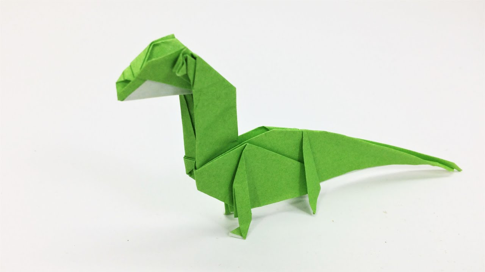

Camel

Interesting Facts about Camel
- Camel's ears are furry.
-
Camels can move easily on sand because of it's specially designed feet.
- When they find, they will drink as much as possible.
Chameleon

Interesting Facts about Chameleon
- Chameleons are reptiles that are part of the iguana suborder.
-
Changing skin color is an important part of comunication among
chameleons.
-
Most chameleons have a prehensile tail that they use to wrap around tree
branches.
Cicada

Interesting Facts about Cicada
- Adult cicadas only live 4-6 weeks before they die.
- The cicada shells on trees are left behind by the nymph.
- Some cicadas play dead when threatened.
Panda

Interesting Facts about Panda
-
They spend up to 16 hours a day eating, just to gain enough sustenance
for survival.
-
Oldest panda ever in captivity - Jia Jia, a female giant panda, born in
1978 and died in 2016.
-
The giant panda is among the world's most adored and protected rare
animals.
Pigeon

Interesting Facts about Pigeon
- Pigeons are incredibly complex and intelligent animals.
-
Pigeons are renowned for their outstanding navigational abilities.
- Pigeons have excelent hearing abilities.
Teddy Bear

Interesting Facts about Teddy Bear
- The old and rare Teddy Bears are highly valuable.
-
Teddy Bear is considered as a symbol of sympathy, congratulation and
love.
-
The arms, heads and legs of Teddy Bears are attached using the safety
joints.
Eiffel Tower

Interesting Facts about Eiffel Tower
- The Eiffel Tower Was the World’s Tallest Structure for 41 Years.
-
Only One Person Died in the Construction of the Eiffel Tower.
-
The Eiffel Tower Was Supposed to Be Torn Down in 1919.
Ladybug
Interesting Facts about Ladybug
- Ladybugs have been in space.
-
When ladybugs fly, they beat their wings about 85 times per second.
-
Ladybugs are the symbol of luck.
Fox
Interesting Facts about Fox
-
They use earth’s magnetic field to hunt their prey.
-
Even though foxes are related to wolves, jackals and dogs, they have more in common to cats.
-
Speaking of whiskers, they have some on their legs.
Turtle
Interesting Facts about Turtle
-
It is a cold-blooded reptile.
-
They are thought to have exceptional night vision due to the unusually large number of rod cells in their retinas.
-
Near their eyes, they possess glands that produce salty tears that rid their body of excess salt absorbed from the water they drink.
T-Rex

Interesting Facts about T-rex
-
It has been believed that this predator could eat up to 230 kilograms of meat in one bite.
-
The name Tyrannosaurus rex means “king of the tyrant lizards”.
-
T-Rex had strong thighs and large tail to counterbalance the weight of its skull.
Butterfly

Interesting Facts about Butterfly
-
Butterflies Taste With Their Feet.
-
Butterflies Drink From Mud Puddles.
-
Their wings are actually clear, and the colors and patterns we see are made by the reflection of the tiny scales covering them.
Lion
Interesting Facts about Lion
-
A lion may sleep up to 20 hours a day.
-
A lion’s heels don’t touch the ground when it walks.
-
A lion’s roar can be heard from as far as 5 miles away.
Swan

Interesting Facts about Swan
-
They are the largest flying birds.
-
Swans are angelic creatures.
-
Swan can live in different environments like meadow, lakes, ponds, rivers, streams, and wetlands as well.
Shark
Interesting Facts about Shark
-
Sharks do not have bones.
-
Sharks have special electroreceptor organs.
-
Shark skin feels similar to sandpaper.
Rabbit

Interesting Facts about Rabbit
-
A rabbit’s teeth never stop growing.
-
Rabbits perform an athletic leap, known as a 'binky', when they’re happy — performing twists and kicks in mid air.
-
They chew 120 times a minute and have over 17,000 taste buds in their mouth.
Peacock
Interesting Facts about Peacock
-
Peacocks Are Not Born With Fancy Feathers.
-
Peacocks make Unpleasant Sounds.
-
A group of peafowl is called a party, muster, ostentation or pride.
Cat
Interesting Facts about Black Cat
-
Black cats were once worshipped as Gods.
-
Black cats were not always considered bad luck.
-
October 27th is National Black Cat Day.